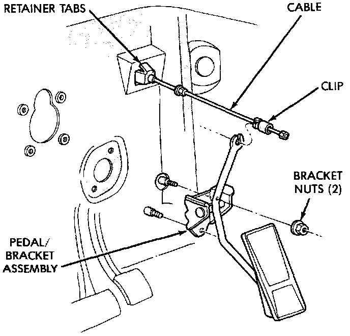
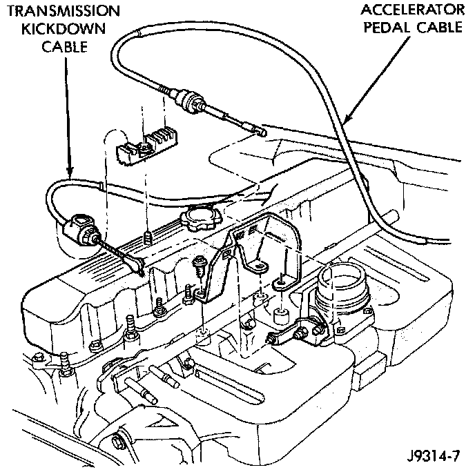
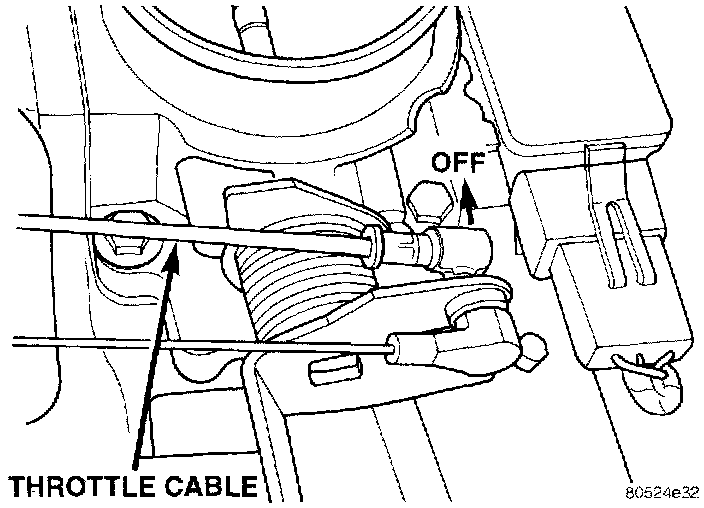

Throttle Cable/Linkage: Service and Repair
THROTTLE CABLE REMOVAL
1. From inside the vehicle, hold up accelerator pedal. Remove plastic cable retainer (clip) and throttle cable core wire from upper end of pedal arm (Fig. 40). Plastic cable retainer (clip) snaps into pedal arm.
2. Remove the cable core wire at pedal arm.
3. From inside the vehicle, pinch both sides of the cable housing retainer tabs (Fig. 40). at the dash panel. Remove cable housing from dash panel and pull into the engine compartment.
Fig. 41 Throttle Cable Routing - 4.0:

4. Remove cable from clip on engine valve cover (Fig. 41).

5. Remove the throttle cable ball end socket at throttle body linkage (Fig. 43) (snaps off).
6. Remove throttle cable from throttle body mounting bracket by compressing retainer tabs and pushing cable through hole in bracket. Remove throttle cable from vehicle.
INSTALLATION
1. Slide throttle cable through hole in throttle body bracket until retainer tabs lock into bracket. Connect cable ball end to throttle body linkage ball (snaps on).
3. Snap cable into clip on engine valve cover.
4. Push other end of cable through opening in dash panel until retaining tabs lock into panel.
5. From inside drivers compartment, slide throttle cable core wire into opening in top of pedal arm. Push cable retainer (clip) into pedal arm opening until it snaps in place.
6. Before starting engine, operate accelerator pedal to check for any binding.